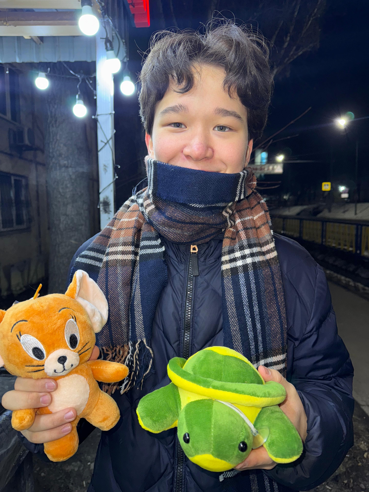

Менің портфолиям

Менің атым Қуатбек Қайрат. Мен 2008 жылы 24 шілде Алматы қаласының №1 Перзентханада дүниеге келдім.Отбасым төрт адамнан тұрады. Олар: Ана, әкем, үлкен қарындасым және мен. 2014 жылы алғаш рет №175 Гимназияның табалдырығын аттағанмын. Сол гимназияда екі жыл оқып, халықаралық Тамос мектебіне 15% грантқа түстім.Тамоста 6 сыныпты бітіріп, 2021 жылы РФММ-ға ақылы негіздегі оқуға түстім. Сол жетінші сыныптан бастап, бүгінгі күнге шейін РФММ-да оқиймын.
Мен болашақта финансы немесе экономика салаларында жұмыс істеуді жоспарлап жүрмін. Менің мақсатым финанс туралы білім сіңіріп өз бизнесімді ашу немесе биржада ақша табу. Менің арманым профессионалды теннисші болу. Мен Елена Рыбакова сияқты WIMBLEDON турнирын жеңгім келеді. Мен өз атымен барлық әлемге еліміздің данқын көрсеткім келеді. Өсіп келе жатқан теннисшілерге үлгі ретінде түскім келеді.